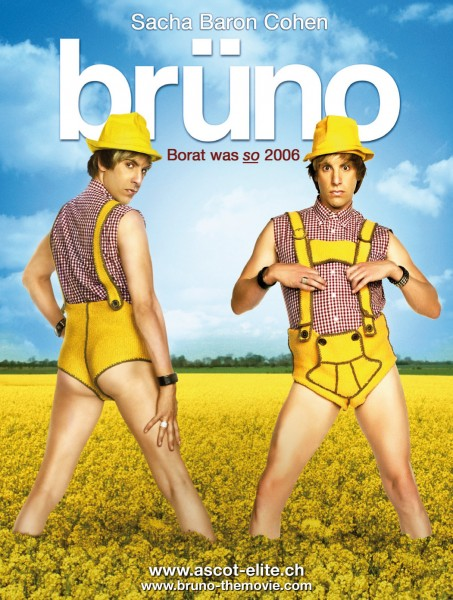

Most Offensive Comedy Movies
By Rohan
If you are looking for the kind of movies which has offensive comedy then you've come to right place. We present you some of the most offensive comedy movies.
1. Zohan Dvir (Adam Sandler) is a superhuman Israeli counter-terrorist and the finest and most respected soldier in the Israel Defense Forces. However, Zohan has become both disgusted and disenchanted by the constant fighting, secretly dreaming of moving to the US and becoming a hairdresser. This reaches a breaking point when a barbecue he hosts is interrupted by the IDF sending Zohan on a mission to stop a Palestinian terrorist group being led by his personal arch-enemy, Fatoush "Phantom" Hakbarah (John Turturro), another superhuman. Despite being upset over his ruined party, Zohan sees it as his long-awaited chance to desert the IDF and move to America. During the pursuit he fakes his own death and smuggles himself onto a plane to New York City, cuts his hair, and adopts the alias "Scrappy Coco" (the names of two dogs he shared the flight's baggage hold with) while claiming that he is "Half Australian, Half Mount Everest." Meanwhile, the Phantom becomes rich and famous for supposedly killing Zohan and starts his own fast-food business, "Phantom's Muchentuchen".

2. Dave Skylark is the host of the talk show Skylark Tonight, where he interviews celebrities about personal topics and gossip. After Skylark and his crew celebrate their 1,000th episode, the show's producer Aaron Rapaport is upset by a producer peer who criticized the show as not being a real news program. A while later Rapaport reveals his concern and urge for change, to which Skylark agrees. Skylark discovers that North Korean leader Kim Jong-un is a fan of Skylark Tonight, prompting Rapaport to arrange an interview. Rapaport travels to a place outside Dandong, China to receive instructions from Sook-yin Park, the North Korean chief propagandist, and Rapaport accepts the task of interviewing Kim, on behalf of Skylark.
3. At the behest of the Kazakh Ministry of Information, reporter Borat Sagdiyev leaves Kazakhstan for the "Greatest Country in the World", the "U, S and A", to make a documentary. He leaves behind his wife Oksana and other inhabitants of his village – including his "43-year-old" mother, "No. 4 prostitute in all of Kazakhstan" sister, "the town rapist", and "the town mechanic and abortionist". His companions are his producer Azamat Bagatov and a pet hen.
4. For years, the Republic of Wadiya has been ruled by Admiral General Aladeen (Sacha Baron Cohen), a childish, tyrannical, sexist, anti-western, and antisemitic despot who surrounds himself with female bodyguards, sponsors al-Qaeda (specially giving shelter to Osama Bin Laden after "they killed his double one year ago") and is working on developing nuclear weapons to attack Israel. He also refused to sell Wadiya's oil fields, a promise he made to his father on his deathbed. After the United Nations Security Council resolves to intervene militarily, Aladeen travels to the UN Headquarters in New York to address the council.
5. Hook-handed Vietnam veteran Staff Sergeant John "Four Leaf" Tayback's memoir, Tropic Thunder, is being made into a film. With the exception of newcomer, supporting actor Kevin Sandusky, the cast—fading action hero Tugg Speedman, five-time Academy Award-winning Australian method actor Kirk Lazarus, closeted gay rapper Alpa Chino, and drug-addicted comedian Jeff Portnoy—all behave unreasonably. Rookie director Damien Cockburn cannot control them during filming of a large battle scene, and production is reported to be one month behind schedule a mere week into production. Furious studio executive Les Grossman orders Cockburn to resume filming as planned, or have the project shut down.
6. Willie T. Soke and his dwarf assistant Marcus Skidmore are professional thieves. Every year, Willie disguises himself as a department store Santa Claus and Marcus disguises himself as an elf in order for both of them to rob shopping malls at night, using Marcus' wife Lois as their getaway driver and accomplice. Marcus takes his duty as an elf seriously, but Willie is a sex-addicted alcoholic, and is gradually unable to appropriately perform his Santa duties with children, plus his safe-cracking performance is being affected, much to Marcus' dismay. When they are hired at the Saguaro Square Mall in Phoenix, the vulgar remarks made by Willie shock the prudish mall manager Bob Chipeska, who brings them to the attention of security chief Gin Slagel.
7.Gay Austrian fashion reporter Brüno Gehard is fired from his own television show, Funkyzeit mit Brüno (Funkytime with Brüno) after disrupting a Milan Fashion week catwalk (whose audience included Paul McCartney), and his lover Diesel leaves him for another man. Accompanied by his assistant's assistant, Lutz, he travels to the United States to become "the biggest Austrian superstar since Hitler".
8. Vance “Van” Wilder (Ryan Reynolds) is a confident and cheeky-chappy seventh year senior at Coolidge College. With no ambition to graduate, Van spends his days driving around campus in his customized golf cart, posing nude for figure drawing classes, organizing soirees for his peers and interviewing for a new assistant, whom he eventually finds in the sexually repressed Taj Badalandabad (Kal Penn).
9. Investment banker Harold Lee is persuaded by his colleagues to do their work while they leave for the weekend. Kumar Patel attends a medical school interview, but intentionally botches it to prevent getting accepted. Harold sees his neighbor, Maria, but is unable to admit his feelings. After smoking marijuana with Kumar, and seeing an advertisement for White Castle, the pair decide to get hamburgers. After traveling to the nearest White Castle in New Brunswick, they find it replaced by "Burger Shack" but learn of another White Castle in Cherry Hill.
10. Jay Baruchel arrives in Los Angeles to visit with old friend and fellow actor Seth Rogen, who invites him to attend a housewarming party hosted by James Franco. Baruchel is uncomfortable at the crowded party, so Rogen accompanies him to a convenience store for cigarettes. There, beams of blue light come down and suck numerous people into the sky. Rogen and Baruchel flee back to Franco's house, where an earthquake strikes and the partygoers rush outside. A large hole opens in Franco's yard, swallowing Michael Cera (impaled by a lamppost), Rihanna, Mindy Kaling, Jason Segel, Christopher Mintz-Plasse and Martin Starr. Rogen, Franco, Jonah Hill and Craig Robinson survive and run back inside the house. Franco's assistant Karen gets accidentally crushed by Paul Rudd. Aziz Ansari gets his arm cut off and falls into the sinkhole. Kevin Hart tries to get Ansari's arm off, but he also falls into the sinkhole. Baruchel tries to help David Krumholtz escape the sinkhole, but he fails and also runs back to the house. They take inventory of their supplies, set up a ration system, and await help.
11. Mac (Seth Rogen) and Kelly Radner (Rose Byrne) are a young couple with an infant daughter, Stella. The restrictions of parenthood make it difficult for them to maintain their old lifestyle, which alienates them from their friends Jimmy Blevins (Ike Barinholtz) and his ex-wife, Paula (Carla Gallo). One day, the couple finds out that Delta Psi Beta, a fraternity known for their outrageous parties, has moved into an adjacent house. The fraternity's leaders, Teddy Sanders (Zac Efron) and Pete Regazolli (Dave Franco), aspire to join Delta Psi's Hall of Fame by throwing a massive end-of-the-year party.

12. Seth (Jonah Hill) and Evan (Michael Cera) are two high school seniors who lament their virginity and poor social standing. Best friends since childhood, the two are about to go off to different colleges, as Seth did not get accepted into Dartmouth like Evan. After Seth is paired with Jules (Emma Stone) during Home-Ec class, she invites him to a party at her house later that night. Later, their friend Fogell (Christopher Mintz-Plasse) comes up to the two and reveals his plans to obtain a fake ID during lunch. Seth uses this to his advantage and promises to bring alcohol to Jules' party. Meanwhile, Evan runs into his crush Becca (Martha MacIsaac) and he offers to get her some vodka for the party. Fogell's fake ID is met with derision by Seth and Evan, as it states that Fogell's name is simply "McLovin". After contemplating their options, Seth decides they have no choice but to have Fogell buy the alcohol with his fake ID. Fogell goes in and successfully buys the alcohol, but is interrupted when a robber enters the store, punches him in the face, and takes money from the cash register.
13. Alison Scott (Katherine Heigl) is a career-minded woman who has just been given an on-air role with E! and is living in the pool house with her sister Debbie's (Leslie Mann) family. Ben Stone (Seth Rogen) is laid-back and sardonic. He lives off funds received in compensation for an injury and sporadically works on a celebrity porn website with his roommates (Jay Baruchel, Jonah Hill, Jason Segel and Martin Starr), in between smoking marijuana or going off with them at theme parks such as Knott's Berry Farm. While celebrating her promotion, Alison meets Ben at a local nightclub. After a night of drinking, they end up having sex. Due to a misunderstanding, they don't use protection: Alison uses the phrase "Just do it already" to encourage Ben to put the condom on, but he misinterprets this to mean to dispense with using one. The following morning, they quickly learn over breakfast that they have little in common and go their separate ways, which leaves Ben visibly upset.
14. In 1991 in Los Angeles, slacker Jeff "the Dude" Lebowski is assaulted in his home by two hired goons who demand money that the wife of a Jeffrey Lebowski owes to a porn magnate and loanshark named Jackie Treehorn. The two soon realize they have attacked the wrong Jeffrey Lebowski and leave, but not before one of them urinates on the Dude's rug.
15. While playing seven minutes in heaven at a party in 1985, 10-year-old Charles "Chuck" Logan (Connor Price) refuses to kiss a goth girl named Anisha (Sasha Pieterse) who attempts to have sex with him. In retaliation, Anisha places a curse on Chuck, so that every single woman he sleeps with will break up with him and marry the next man who asks her out.
16. Last but the most famous one. In the original American Pie (1999), Jim Levenstein and his friends Kevin Myers, Paul Finch, and Chris Ostreicher attempt to lose their virginity before their high school graduation. Jim pursues Slovakian exchange student Nadia, but his attempts fail after he ejaculates prematurely twice during foreplay, and instead pursues band geek Michelle, asking her to the prom. At Stifler's prom after-party, Jim has a one-night stand with Michelle.